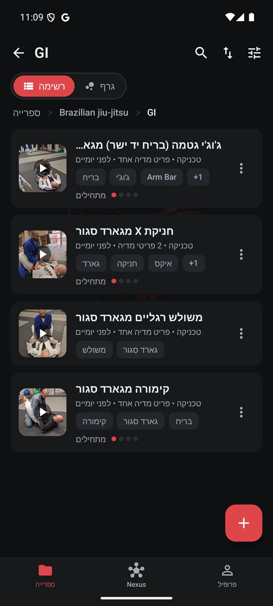
ספרייה
כל הטכניקות מסודרות בתיקיות
מסדרים לפי אומנות, חגורה, נושא או כל מבנה אחר – תיקיות בתוך תיקיות. לכל טכניקה מוצגת תמונה מהסרטון הראשון שלה, וחיפוש מהיר מוצא כל טכניקה לפי שם, תגית או תיאור.
הספרייה האישית שלך לטכניקות אומנויות לחימה. כל הסרטונים, ההערות ותוכניות הלימוד שלך במקום אחד, בטלפון. בלי חשבון, בלי ענן ובלי פרסומות.
הורדה לאנדרואידההורדה נתקעת על 100%? פתחו את הדף בדפדפן עצמו – ⋮ ← פתיחה ב-Chrome – ולחצו שוב על הורדה. למה?
ממשק האפליקציה בעברית ובאנגלית, לפי שפת הטלפון. באנדרואיד 13 ומעלה אפשר לבחור שפה לאפליקציה בלבד: הגדרות ← אפליקציות ← JutsuNexus ← שפה.

מסדרים לפי אומנות, חגורה, נושא או כל מבנה אחר – תיקיות בתוך תיקיות. לכל טכניקה מוצגת תמונה מהסרטון הראשון שלה, וחיפוש מהיר מוצא כל טכניקה לפי שם, תגית או תיאור.
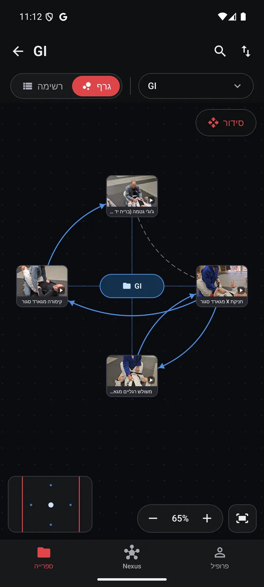
מחליפים את הספרייה לתצוגת גרף: כל טכניקה ככרטיס עם תמונה מהסרטון שלה, מחוברת לתיקייה שלה ולטכניקות שהיא מובילה אליהן. מגדילים ומקטינים בשתי אצבעות, מסדרים כמו שנוח, ולוחצים על טכניקה כדי לצפות בה.

כל טכניקה מקבלת דף משלה:
ולכל טכניקה מסמנים לאן אפשר להמשיך ממנה, ורואים את השרשרת במפת הטכניקות. איך זה עובד ←
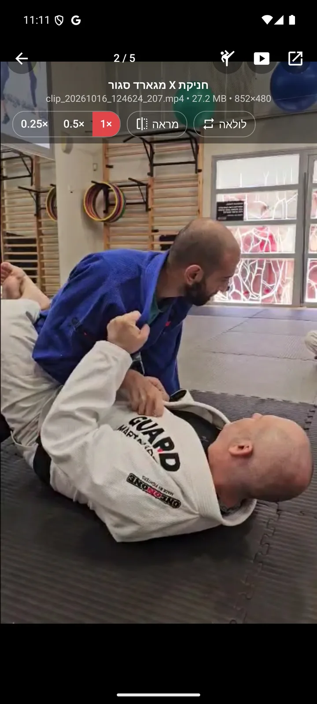
לחיצה על התמונה של טכניקה בספרייה מנגנת את כל הסרטונים בתיקייה, אחד אחרי השני. החלקה עוברת לסרטון הבא, גם בטכניקה הבאה – מצוין לחזרה לפני אימון או מבחן חגורה. בלשונית המדיה של טכניקה אפשר לקבוע את סדר הסרטונים.
בזמן הצפייה, הילוך איטי, תמונת מראה ולולאה על חלק אחד עוזרים ללמוד את התנועה. איך משתמשים בהם ←
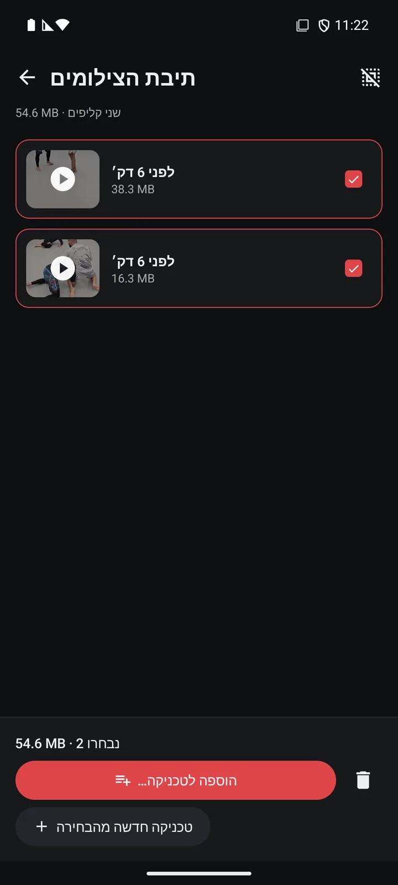
וידג'ט במסך הבית פותח את המצלמה בלחיצה אחת. הצילומים נאספים ב"תיבת הצילומים", ומשם משייכים אותם לטכניקה קיימת או פותחים ממנה טכניקה חדשה. הסרטונים נדחסים אוטומטית כדי לחסוך מקום.
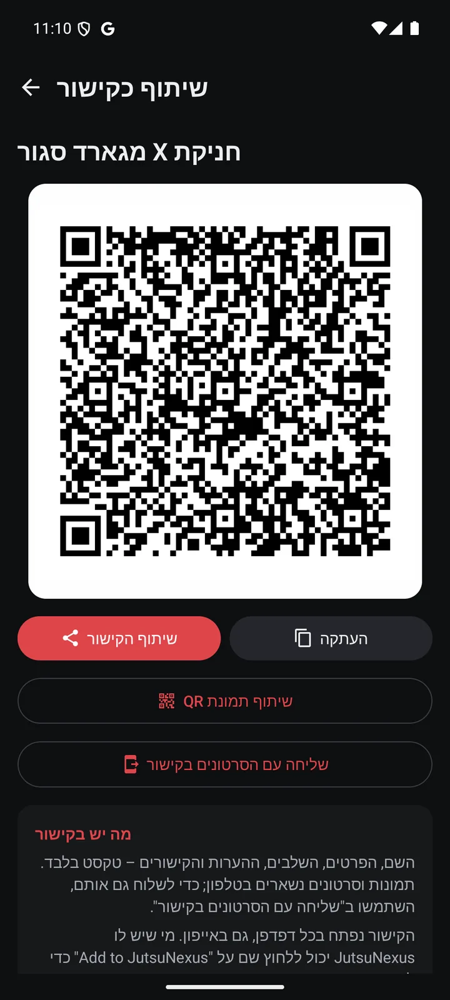
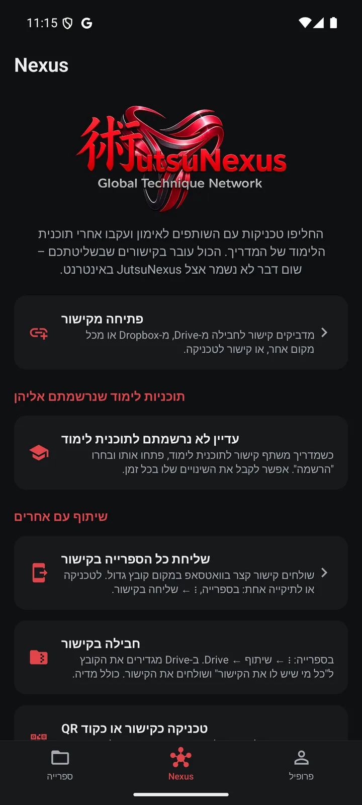
מדריך שולח את תוכנית הלימוד בשליחה בקישור Drive. התלמידים נרשמים לתוכנית מהקישור ומקבלים אותה לקריאה בלבד. כשהמדריך מעלה שינויים הקישור נשאר אותו קישור, והתלמידים לוחצים בדיקת עדכונים ומקבלים את הגרסה החדשה.
הכול נשמר בטלפון. אינטרנט צריך רק כששולחים או פותחים קישור, או כשמעדכנים תוכנית לימוד.
אין הרשמה, אין שרת, ואף אחד לא רואה את הספרייה שלכם.
בכפתור "שיתוף" של YouTube בוחרים JutsuNexus, והסרטון נשמר כקישור בטכניקה.
בפרופיל בוחרים את איכות הסרטונים והתמונות ורואים כמה מקום הספרייה תופסת.
האפליקציה לא נמצאת בחנות Google Play, ולכן אנדרואיד מבקש פעם אחת אישור להתקין אותה. התהליך לוקח בערך דקה. בחרו מאיפה אתם מתקינים:
פתחו את האתר הזה בטלפון (ב-Chrome) ולחצו על הורדה לאנדרואיד.
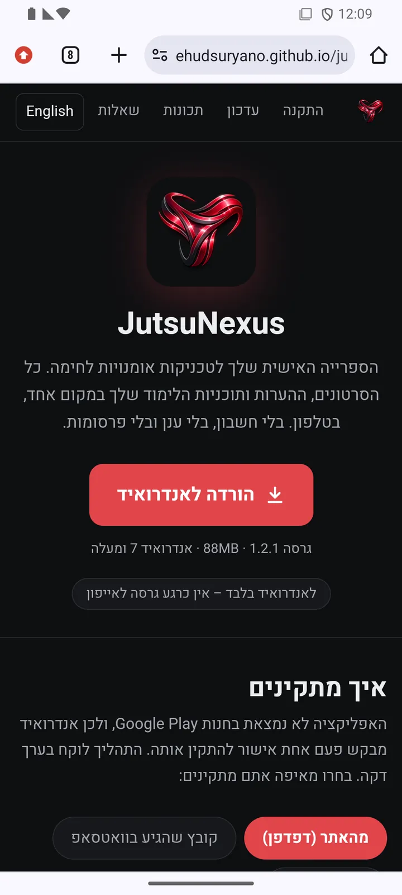
Chrome מציג "הקובץ עלול להזיק". ההודעה הזאת מופיעה לכל קובץ התקנה שלא מגיע מהחנות. לחצו להוריד בכל זאת.
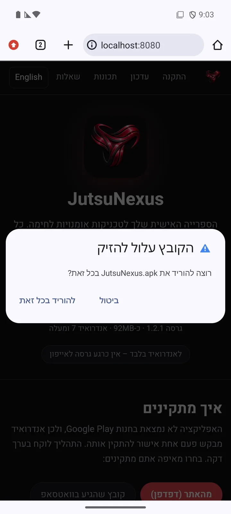
בסוף ההורדה מופיע "קובץ אחד הורד" – לחצו פתיחה. אם פספסתם את ההודעה – הקובץ נמצא ב-Chrome תחת ⋮ ← הורדות, או באפליקציית הקבצים בתיקיית הורדות.
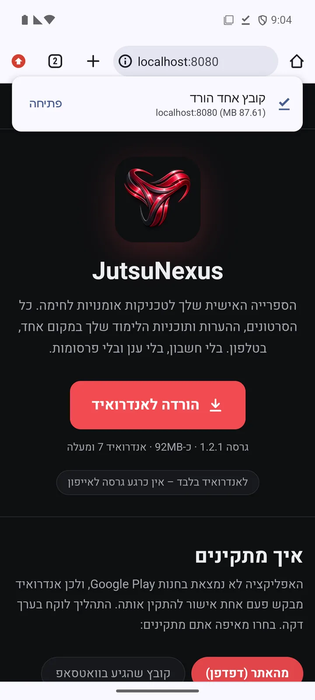
בפעם הראשונה אנדרואיד חוסם את ההתקנה: "לצורכי אבטחה, הטלפון שלך חסום להתקנת אפליקציות לא מוכרות מהמקור הזה". לחצו הגדרות.
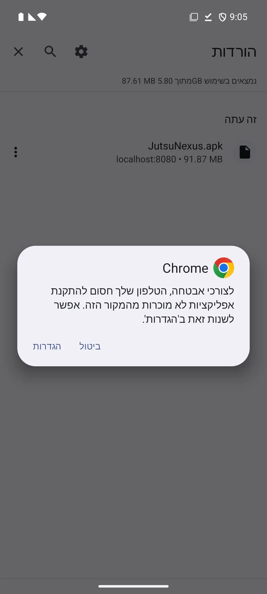
הפעילו את המתג לאפשר מהמקור הזה. בטלפונים חדשים חלון ההתקנה קופץ מיד; אם לא – לחצו על חץ החזרה.
ההרשאה ניתנת ל-Chrome בלבד, ואפשר לכבות אותה שוב אחרי ההתקנה.
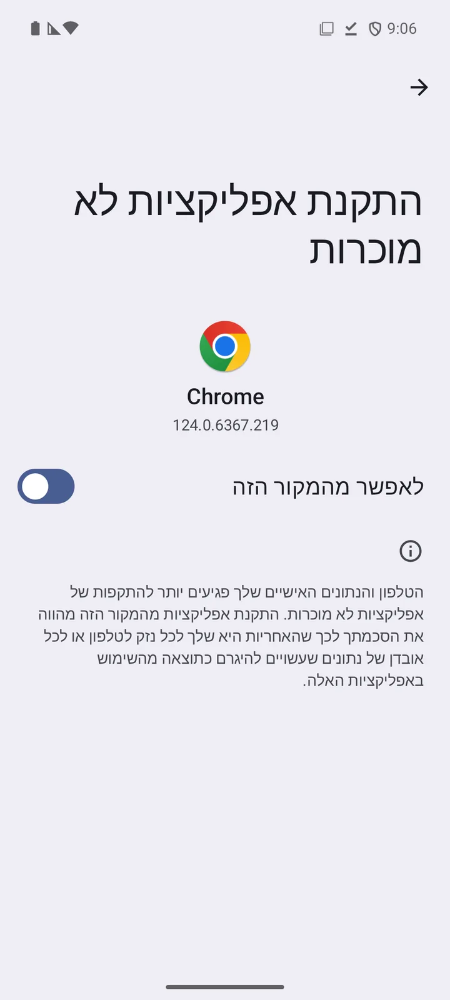
מופיע "האם ברצונך להתקין אפליקציה זו?" – לחצו התקנה.
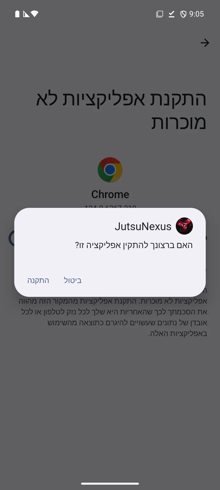
בטלפון עם חשבון Google מופיע לרוב חלון של Play Protect: "מומלץ לסרוק את האפליקציה" (App scan recommended). זה קורה לכל אפליקציה שלא מגיעה מהחנות.
לחצו פרטים נוספים (More details), ובאפשרות שנפתחת לחצו להתקין בלי סריקה (Install without scanning). ההתקנה ממשיכה מיד.
לא ללחוץ על הכפתור הכחול התחתון, לא להתקין (Don't install app) – הוא מבטל את ההתקנה.

"האפליקציה הותקנה." – לחצו פתיחה. JutsuNexus מופיע עכשיו גם במסך האפליקציות.
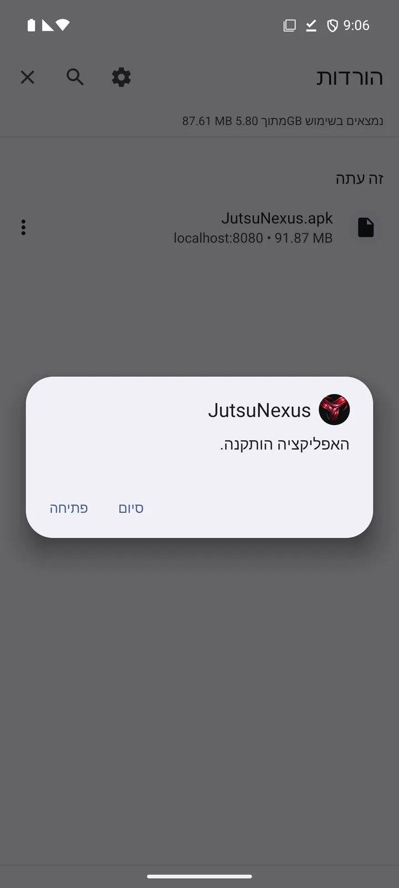
עדיף לשלוח קישור. אם אתם מעבירים את האפליקציה לחבר, שלחו לו בוואטסאפ את הקישור לאתר הזה ולא את הקובץ: הקישור תמיד מוריד את הגרסה העדכנית, והחבר מקבל גם את ההוראות. אחרי הלחיצה על הקישור ממשיכים לפי הלשונית מהאתר.
הצילומים בלשונית הזו מטלפון סמסונג שמוגדר לאנגלית. בטלפון בעברית הכפתורים נמצאים באותו מקום.
הקובץ מגיע כמסמך ששמו מתחיל ב-JutsuNexus ונגמר ב-.apk. אם יש לידו חץ הורדה, לחצו עליו קודם ולחכו שההורדה תסתיים. אחר כך לחצו על הקובץ עצמו.

וואטסאפ מציג "הקובץ הזה עלול להזיק" (This file may be harmful). הכפתור הירוק הגדול הוא ביטול – לא אותו. לחצו על פתיחת הקובץ (Open file) שמתחתיו.

בפעם הראשונה הטלפון חוסם את ההתקנה: "נדרשת הרשאה" (Permission required) עבור WhatsApp. לחצו הגדרות (Settings).

במסך התקנת אפליקציות לא ידועות (Install unknown apps) של WhatsApp הפעילו את המתג (בסמסונג: Allow permission, בטלפונים אחרים: לאפשר מהמקור הזה). חלון ההתקנה קופץ מיד.

מופיע "להתקין את האפליקציה?" (Install this app?) – לחצו התקנה (Install). אם Play Protect שואל – פרטים נוספים ← להתקין בלי סריקה, כמו בשלב 7 בלשונית מהאתר.

"האפליקציה הותקנה" (App installed) – לחצו פתיחה (Open).
אם וואטסאפ אומר שאין אפשרות לפתוח את הקובץ: פתחו את אפליקציית הקבצים (ובסמסונג: הקבצים שלי), חפשו את הקובץ של JutsuNexus ולחצו עליו. במקרה הזה ההרשאה תתבקש עבור אפליקציית הקבצים במקום עבור וואטסאפ.

אחרי ההתקנה כדאי לכבות שוב את ההרשאה של וואטסאפ, כדי שקבצים שמגיעים בצ'אטים אחרים לא יוכלו להתקין אפליקציות. הדרך: הגדרות ← אפליקציות ← גישה מיוחדת ← התקנת אפליקציות לא מוכרות ← WhatsApp
בטלפוני סמסונג חדשים ההתקנה נחסמת לגמרי בגלל תכונה בשם חוסם אוטומטי (Auto Blocker). היא מופעלת כברירת מחדל במכשירים שיצאו עם One UI 6.1.1 ומעלה (למשל סדרת S24 ומכשירים חדשים יותר). אם ניסיתם להתקין ושום דבר לא קרה, או שהופיעה הודעה שההתקנה נחסמה – זו הסיבה.
הגדרות ← אבטחה ופרטיות (Security and privacy). גוללים למטה עד חוסם אוטומטי (Auto Blocker). אפשר לכבות אותו ישירות מהמתג שלידו.

במסך של החוסם האוטומטי המתג העליון צריך להיות על כבוי (Off). הטלפון יבקש טביעת אצבע או קוד. בגרסאות חדשות של One UI אפשר לבחור לכבות לזמן מוגבל, והחוסם יחזור לפעול לבד אחרי ההתקנה.

אחרי ההתקנה אפשר להפעיל שוב את החוסם האוטומטי. האפליקציה תמשיך לעבוד. כדי להתקין עדכון בעתיד צריך לכבות אותו שוב לרגע.
שמות התפריטים בסמסונג משתנים מעט בין גרסאות One UI.
אין עדכונים אוטומטיים. כשיוצאת גרסה חדשה, מורידים אותה מהאתר ומתקינים בדיוק כמו בפעם הראשונה – מעל הגרסה הקיימת. במקום "להתקין" יופיע "לעדכן את האפליקציה?" (Update this app?) – לחצו עדכון. כל הטכניקות, הסרטונים וההערות נשמרים.

אל תמחקו את האפליקציה כדי לעדכן. מחיקת האפליקציה מוחקת את כל הספרייה שבתוכה – הסרטונים, ההערות והכול. מתקינים את הגרסה החדשה מעל הישנה, בלי למחוק.
גיבוי. הכול נשמר רק בטלפון. מדי פעם כדאי לייצא גיבוי: פרופיל ← ייבוא / ייצוא ← ייצוא ← כל הספרייה ולשמור את קובץ ה-ZIP ב-Google Drive או במחשב. אם מחליפים טלפון, מייבאים את הקובץ במכשיר החדש.
טריק: שלחו את קובץ ה-ZIP לעצמכם בוואטסאפ. כדי לשחזר, לחצו עליו בצ'אט ובחרו לפתוח עם JutsuNexus – מסך הייבוא נפתח ישר.
הסבר צעד אחר צעד, עם צילומי מסך, לכל אחד מהדברים האלה.
קישור קצר בוואטסאפ במקום קובץ גדול. ההורדה מגיעה ישירות מהטלפון שלכם.
מעלים ל-Google Drive שלכם. הקישור עובד גם כשהטלפון כבוי, ותלמידים יכולים להירשם לתוכנית לימוד.
קליפ אחד, או כל הקליפים של טכניקה מחוברים לסרטון אחד.
כל הטכניקות ככרטיסים עם תמונה, מחוברות זו לזו. מגדילים, מסדרים ומקשרים.
מסמנים לאן ממשיכים מכל טכניקה, ורואים את השרשרת במפת הטכניקות.
הילוך איטי, תמונת מראה ולולאה שחוזרת על חלק אחד.
מצלמים טכניקה בלחיצה אחת, בלי לפתוח את האפליקציה.
במקום קובץ גדול, שולחים קישור קצר בוואטסאפ. הטכניקה והסרטונים שלה עוברים ישירות מהטלפון שלכם לטלפון השני, ושום דבר לא מועלה לשום מקום.
בספרייה לוחצים על ⋮ ליד טכניקה או תיקייה, ואז שליחה בקישור.
כדי לשלוח הכול: Nexus ← שליחת כל הספרייה בקישור
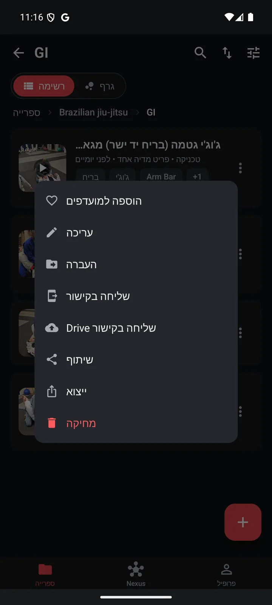
לוחצים שיתוף הקישור ובוחרים וואטסאפ או כל אפליקציה אחרת.
באותו חדר אפשר גם לסרוק את קוד ה-QR במצלמה של הטלפון השני.
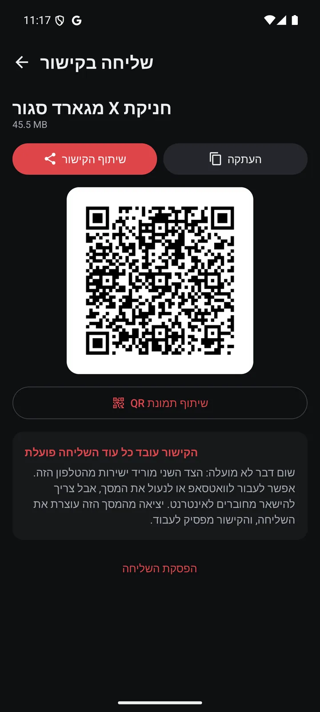
אפשר לעבור לאפליקציה אחרת או לנעול את המסך, ומופיעה התראה על השליחה. הטלפון שלכם צריך להישאר מחובר לאינטרנט עד שההורדה בצד השני מסתיימת.
אותו קישור עובד לכמה אנשים, כך שמדריך יכול לשלוח אותו לכל הכיתה. כשכולם קיבלו, לוחצים הפסקת השליחה.
לוחצים על הקישור ואז על Open in JutsuNexus.

רואים את השם והגודל ולוחצים הורדה. אם החיבור נופל, ההורדה ממשיכה מהמקום שבו נעצרה.
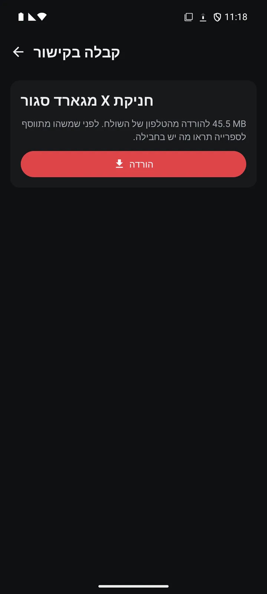
בסיום ההורדה רואים מה יש בחבילה ולוחצים ייבוא. התוכן מתווסף לספרייה ושום דבר לא נדרס.
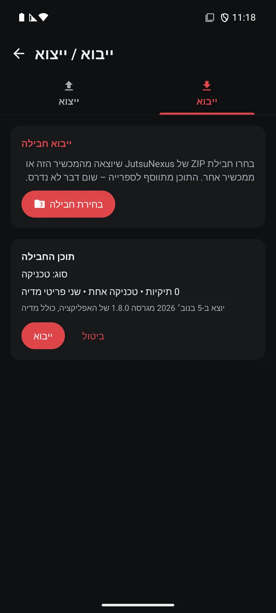
חשוב לדעת
האפליקציה מעלה עותק ל-Google Drive שלכם ונותנת לכם קישור. בניגוד לשליחה בקישור, הוא ממשיך לעבוד גם כשהטלפון כבוי, כך שאפשר לפתוח אותו מתי שרוצים. מדריכים יכולים גם לעדכן את התוכן בלי לשנות את הקישור.
בספרייה לוחצים על ⋮ ליד טכניקה או תיקייה, ואז שליחה בקישור Drive.
כדי לשלוח הכול: Nexus ← העלאת כל הספרייה ל-Drive

לוחצים העלאה וקבלת קישור. בפעם הראשונה נכנסים עם חשבון Google ומאשרים גישה. אם Google מציג תיבת סימון עבור Drive, סמנו אותה, אחרת ההעלאה לא תתחיל.
האפליקציה רואה רק קבצים שהיא עצמה יצרה ב-Drive, לא את השאר. השאירו את המסך פתוח עד שההעלאה מסתיימת.
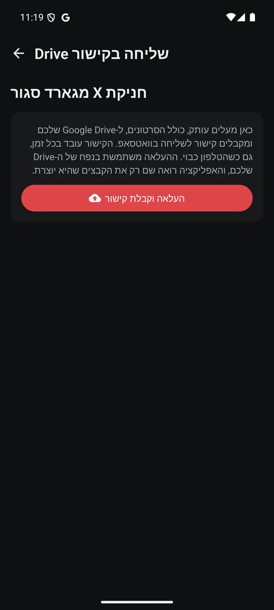
לוחצים שיתוף הקישור ובוחרים וואטסאפ או כל אפליקציה אחרת. באותו חדר אפשר גם לסרוק את קוד ה-QR במצלמה של הטלפון השני. מכאן הטלפון שלכם לא צריך להיות דלוק.
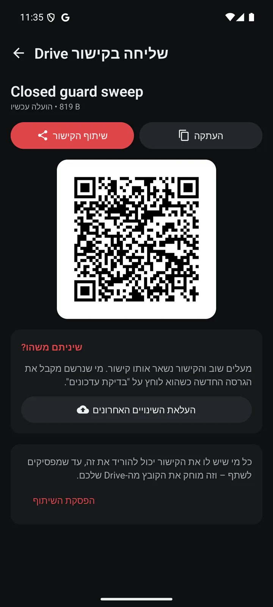
לוחצים על הקישור ואז על Open in JutsuNexus. כדי לקבל לא צריך חשבון Google.

ייבוא חד-פעמי מוסיף עותק לספרייה, אחרי שמראה מה יש בחבילה. הרשמה מוסיף אותה לקריאה בלבד, ו-בדיקת עדכונים בלשונית Nexus מביא את השינויים שלכם.
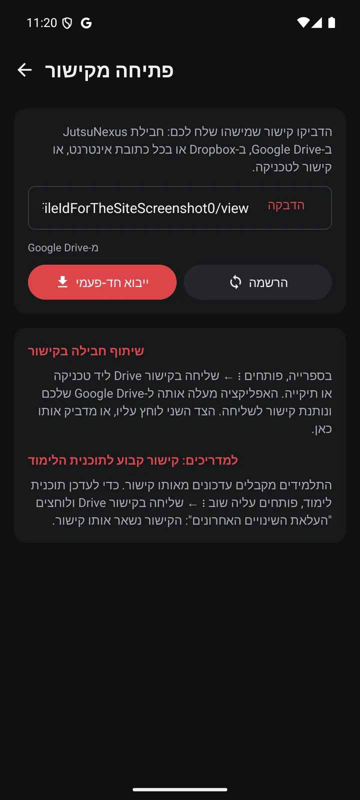
שיניתם משהו? פתחו שוב את שליחה בקישור Drive ולחצו העלאת השינויים האחרונים. הקישור נשאר אותו קישור.
הפסקת השיתוף מוחק את הקובץ מה-Drive ומבטל את הקישור לכולם. מה שבספרייה שלכם נשאר. ההעלאות שלכם מופיעות גם בלשונית Nexus.
חשוב לדעת
האפליקציה מעבירה את הסרטון לאפליקציית YouTube שלכם, ושם מעלים אותו מהחשבון שלכם. אפשר לשלוח קליפ אחד, או לחבר את כל הקליפים של הטכניקה לסרטון אחד. לא צריך להתחבר ל-JutsuNexus עם חשבון.
בלשונית מדיה של הטכניקה לוחצים העלאה ליוטיוב.
אפשר גם מתוך צפייה בסרטון: הכפתור עם סמל יוטיוב בראש המסך שולח את הסרטון הזה.
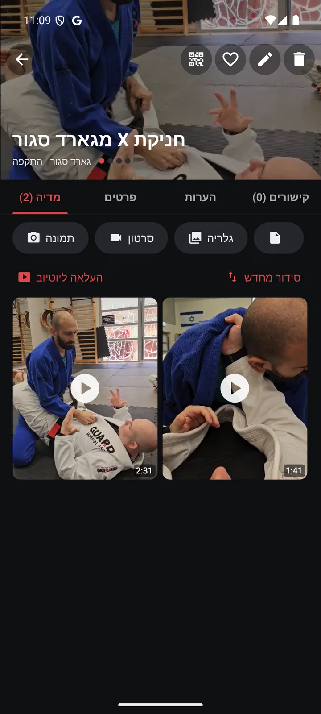
חיבור הקליפים לסרטון אחד מחבר את כל הקליפים לסרטון אחד, לפי הסדר בלשונית מדיה (אפשר לשנות אותו בסידור מחדש). החיבור לוקח קצת זמן, השאירו את המסך פתוח.
קליפ אחד שולח קליפ אחד שבוחרים מהרשימה, כמו שהוא.
לוחצים חיבור ופתיחת YouTube או פתיחת YouTube.
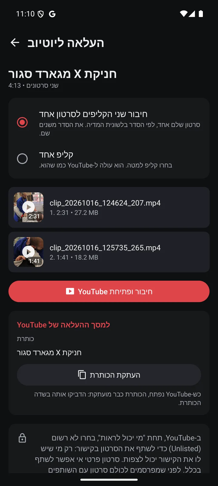
יוטיוב נפתח עם הסרטון. לוחצים Next.
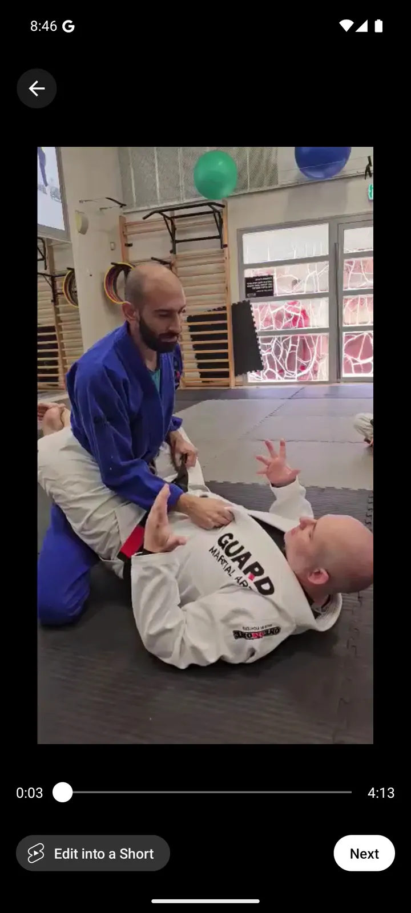
האפליקציה כבר העתיקה את שם הטכניקה ואת התיאור שלה. לוחצים לחיצה ארוכה בשדה הכותרת ובוחרים הדבק (Paste).
את התיאור מוסיפים ב-Show more ← Add description: פותחים את הלוח (Clipboard) במקלדת ובוחרים אותו. אם הוא לא שם, הפעילו את הלוח בהגדרות המקלדת, או חזרו ל-JutsuNexus ולחצו העתקת התיאור.
בדקו את Visibility לפני שמעלים: יוטיוב מתחיל ב-Public. כדי לשתף בקישור בחרו Unlisted. לוחצים Upload.
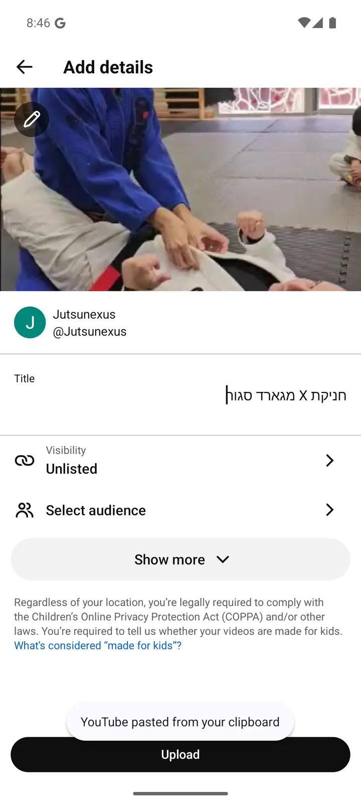
אחרי ההעלאה, ביוטיוב לוחצים Share מתחת לסרטון ובוחרים JutsuNexus (אם הוא לא מופיע, דרך More). בוחרים את הטכניקה, והקישור נשמר בלשונית קישורים שלה.
חשוב לדעת
בגרף הטכניקות מוצגות ככרטיסים עם תמונה מהסרטון הראשון שלהן, סביב התיקייה שהן נמצאות בה, עם חיצים לטכניקות שהן מובילות אליהן. זו דרך נוספת להסתכל על אותה ספרייה: שום דבר לא זז ולא משתנה בתיקיות.
בראש לשונית הספרייה לוחצים גרף. כדי לחזור לוחצים רשימה.
בתיבה שלידו בוחרים כל הטכניקות או קבוצה אחת, למשל אומנות לחימה אחת או חגורה.
הקווים הכחולים החלשים מחברים כל טכניקה לתיקייה שלה. חץ כחול פירושו מובילה אל (מגארד לסוויפ, מסוויפ להכנעה), וקו מקווקו פירושו שהטכניקות קשורות.
גוררים באצבע אחת כדי לזוז, ומגדילים או מקטינים בשתי אצבעות. גם לחצני הזום מגדילים ומקטינים, והכפתור המרובע שלידם מראה את הכול.
המפה הקטנה בפינה מראה איפה אתם, ולחיצה עליה קופצת לשם. כשמקטינים הרבה, הטכניקות הופכות לנקודות והקבוצות נשארות קריאות.
הקווים שלה נצבעים באדום והכרטיס שלה נפתח בתחתית. צפייה מנגן את הסרטונים שלה, ו-פרטים פותח את הטכניקה.
לוחצים על קבוצה, ו-כניסה לתיקייה מציג רק אותה.
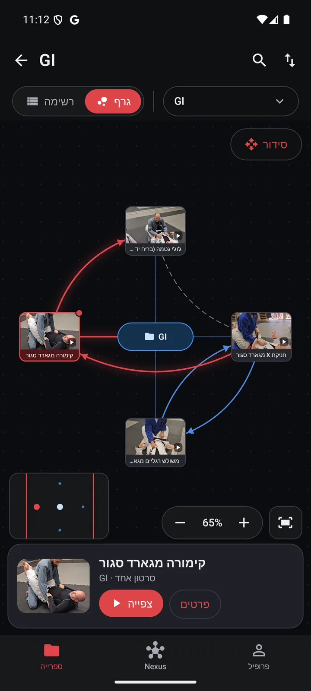
לוחצים סידור. גוררים כרטיס למקום שרוצים, ומאז הגרף שומר את הסידור שלכם (חופשי).
מעגלי מסדר את הגרף באשכולות סביב כל קבוצה, ו-עץ כעץ לרוחב. לוחצים על כרטיס ועל נעיצה כדי שיישאר במקומו כשבוחרים סידור אוטומטי.
ביטול פעולה מבטל את השינוי האחרון, ו-איפוס מחזיר לסידור האוטומטי. בסוף לוחצים סיום.
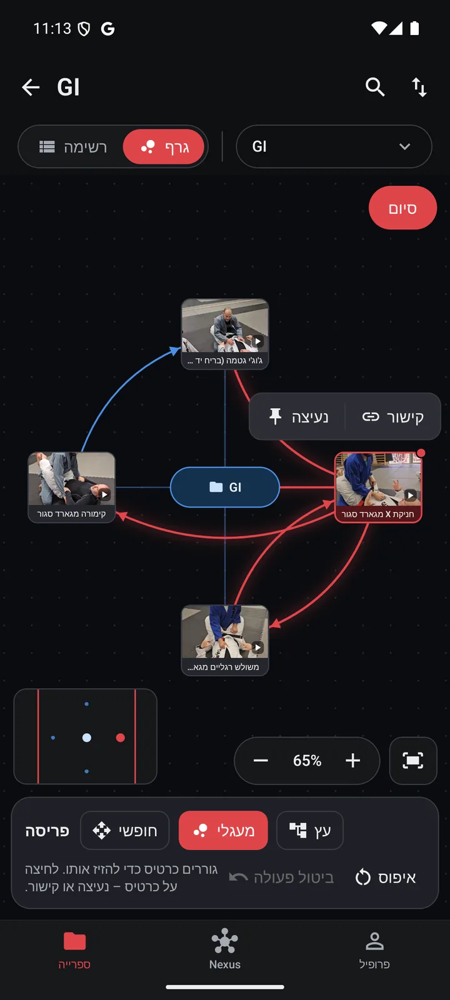
במצב סידור לוחצים על טכניקה, על קישור, ואז על הטכניקה השנייה. בוחרים איזו מובילה לאיזו, או קשורות, או הסרת הקישור כדי להסיר את הקישור.
אלה אותם קישורים שבעריכת הטכניקה, בשדות מוביל אל ו-טכניקות קשורות.
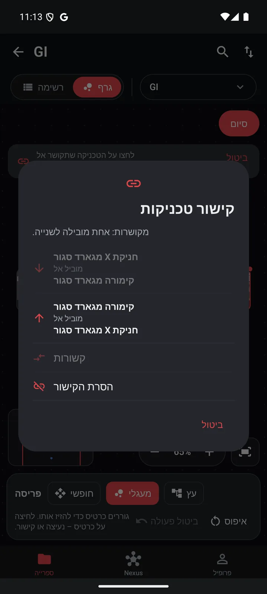
בלשונית פרטים של טכניקה, פתיחה בגרף מראה אותה בגרף.
חשוב לדעת
מסמנים לכל טכניקה לאן אפשר להמשיך ממנה, למשל מגארד לסוויפ ומסוויפ להכנעה. מפת הטכניקות מראה את השרשרת: מה בא לפני, ומה אפשר לעשות אחרי.
פותחים טכניקה, לוחצים על העיפרון, ויורדים לשדה מוביל אל. לוחצים הוספת הטכניקה הבאה, מסמנים טכניקה אחת או יותר, ולוחצים סיום.
אפשר לבחור כל טכניקה בספרייה, גם מתיקייה אחרת. בסוף לוחצים שמירת השינויים.
מתחת יש את טכניקות קשורות, לטכניקות שקשורות בלי כיוון.
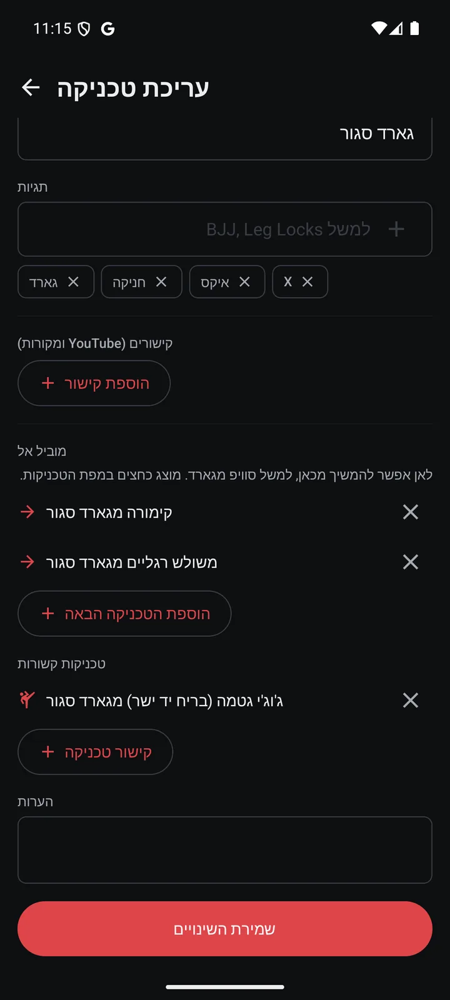
בלשונית פרטים של הטכניקה מופיעים מגיע מ… (מה מוביל אליה) ו-מוביל אל (לאן היא מובילה). לחיצה על שם פותחת את הטכניקה הזו.
את מגיע מ… לא צריך למלא: הוא מתמלא לבד מהטכניקות שמובילות לכאן.
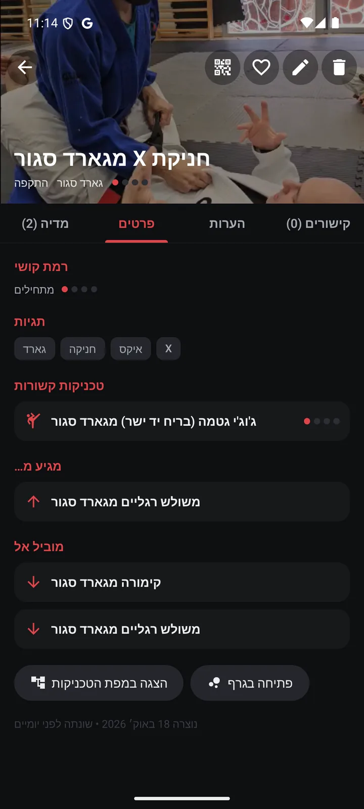
באותה לשונית לוחצים הצגה במפת הטכניקות. הטכניקה מסומנת באדום. מעליה מה שמוביל אליה, מתחתיה לאן היא מובילה, כמה צעדים קדימה, והטכניקות הקשורות לידה.
חץ אדום פירושו מובילה אל, וחץ עם שני ראשים פירושו ששתי הטכניקות מובילות זו לזו. קו אפור פירושו שהן קשורות.
לוחצים על טכניקה אחרת כדי שהמפה תתמקד בה, ועל הטכניקה האדומה כדי לפתוח אותה. החץ בראש המסך חוזר אחורה.
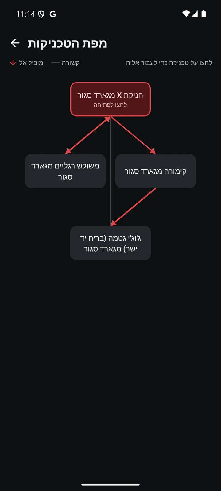
חשוב לדעת
כשצופים בסרטון באפליקציה, מעליו יש שורה של כלי לימוד: הילוך איטי, תמונת מראה, ולולאה שחוזרת על חלק אחד מהתנועה.
לוחצים על התמונה של טכניקה בספרייה, על צפייה בגרף, או על סרטון בלשונית מדיה של הטכניקה. כלי הלימוד נמצאים מתחת לשם הסרטון.
0.5× מנגן בחצי מהירות, ו-0.25× ברבע מהירות. 1× מחזיר למהירות רגילה.
לוחצים לולאה איפה שהחלק מתחיל, ושוב איפה שהוא נגמר. הכפתור מראה אז את הזמנים, למשל 0:27–0:29, והחלק הזה חוזר שוב ושוב. לחיצה נוספת מפסיקה את הלולאה.
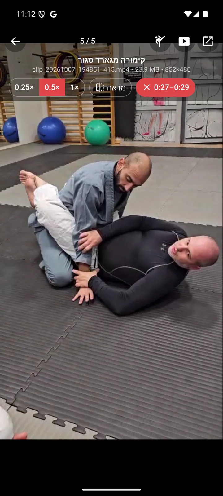
לוחצים מראה כדי להפוך את הסרטון ימין-שמאל, וללמוד את התנועה לצד השני.
כשהסרטון הפוך, כפתור ההפעלה וסרגל הזמן נמצאים בתחתית המסך, והלולאה מסומנת על הסרגל באדום.
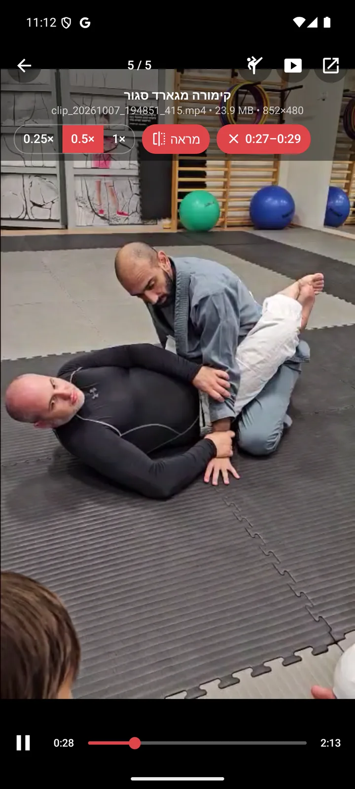
חשוב לדעת
עם הווידג'ט מצלמים טכניקה בלחיצה אחת, בלי לפתוח את האפליקציה – מושלם לאימון. יש שלושה גדלים: כפתור צילום לבד (1×1), כפתור צילום עם מונה (2×1), וכפתור צילום רחב עם מונה (3×1).
לחיצה ארוכה על מקום ריק במסך הבית, ואז ווידג'טים.
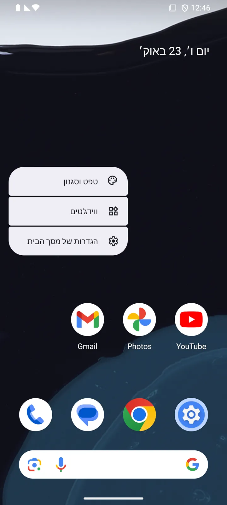
מחפשים JutsuNexus (או גוללים אליו), לוחצים עליו כדי לראות את שלושת הגדלים, בוחרים אחד ולוחצים הוספה. אפשר גם ללחוץ לחיצה ארוכה על הווידג'ט ולגרור אותו למקום שרוצים.
בסמסונג זה אותו דבר: לחיצה ארוכה ← ווידג'טים ← JutsuNexus ← בוחרים גודל ← הוספה.
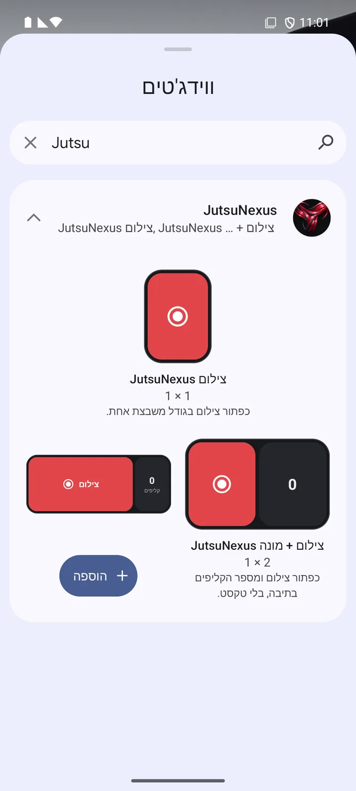
צילום פותח את המצלמה. המספר לידו (קליפים) מראה כמה צילומים מחכים בתיבת הצילומים – לחיצה עליו פותחת אותה.
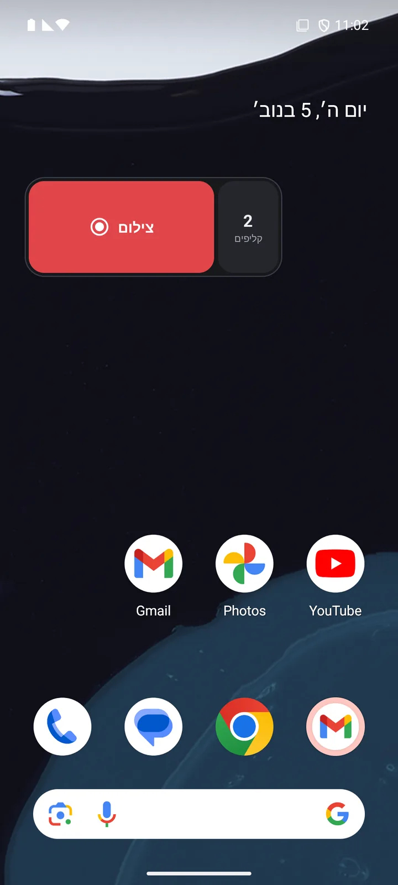
בלחיצה הראשונה על צילום הטלפון שואל אם לאפשר ל-JutsuNexus לצלם. בחרו בזמן השימוש באפליקציה.
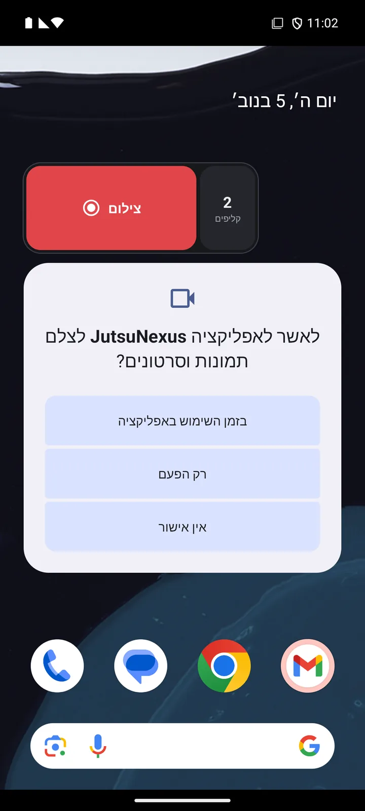
אחרי כל צילום המצלמה נפתחת שוב לצילום הבא, כך שכל האימון הוא לחיצה אחת. כשמסיימים – לוחצים חזרה.
הצילומים מחכים בתיבת הצילומים. פותחים אותה מהמונה בווידג'ט או מהשורה בראש מסך הספרייה, ומשייכים כל צילום לטכניקה.
האזהרות מופיעות לכל אפליקציה שמותקנת מחוץ לחנות Google Play, לא רק לזו. האפליקציה לא דורשת חשבון, לא אוספת מידע ושולחת רק מה שאתם בוחרים לשלוח. היא משתמשת באינטרנט רק כשאתם שולחים או פותחים קישור.
זה קורה כשהאתר נפתח בתוך אפליקציה אחרת, למשל מקישור שקיבלתם בהודעה, ולא בדפדפן עצמו. רואים את זה בראש המסך: במקום שורת כתובת יש X וחץ למטה. שם הדפדפן מוריד את כל הקובץ, אבל לא מציג את השאלה "הקובץ עלול להזיק", ולכן ההורדה לא מסתיימת. זה קורה גם ב-Chrome וגם ב-Brave.
הפתרון: לוחצים על ⋮ בפינה ובוחרים פתיחה ב-Chrome (Open in Chrome) או בדפדפן שלכם, ושם לוחצים שוב על הורדה לאנדרואיד. הפעם מופיע "הקובץ עלול להזיק" – לוחצים להוריד בכל זאת, וההורדה מסתיימת.
ההורדה התקועה לא נשמרת בשום מקום, אז אפשר פשוט לסגור אותה.
כרגע לא. האפליקציה זמינה לאנדרואיד בלבד. קישורי ה-QR של טכניקות נפתחים גם באייפון, בדפדפן.
זה קורה כשמותקנת בטלפון גרסה ישנה של JutsuNexus שנחתמה אחרת (למשל גרסת ניסיון שקיבלתם ישירות). פתחו את האפליקציה הישנה, ייצאו את כל הספרייה (Profile ← Import / Export ← Export ← Entire Library), שמרו את הקובץ, מחקו את האפליקציה הישנה, התקינו את החדשה וייבאו את הקובץ.
סיבות נוספות: אין מספיק מקום פנוי (צריך לפחות 250MB: הקובץ שהורד ועוד האפליקציה), או שההורדה לא הושלמה – נסו להוריד שוב.
גרסה 1.3 דורשת אנדרואיד 10 ומעלה וטלפון 64 ביט. בטלפון ישן יותר התקינו את גרסה 1.2.2. יש בה הכול חוץ מהשליחה בקישור.
בסמסונג – כבו את החוסם האוטומטי. בכל טלפון אחר – פתחו את הקובץ מאפליקציית הקבצים, בתיקיית הורדות.
מספר הגרסה האחרונה כתוב מתחת לכפתור ההורדה בראש הדף. את הגרסה המותקנת אצלכם רואים בלשונית פרופיל באפליקציה.
האפליקציה עצמה תופסת כ-125MB אחרי ההתקנה. הספרייה תופסת לפי כמות הסרטונים, ודחיסת הסרטונים (בפרופיל) מקטינה אותם משמעותית.